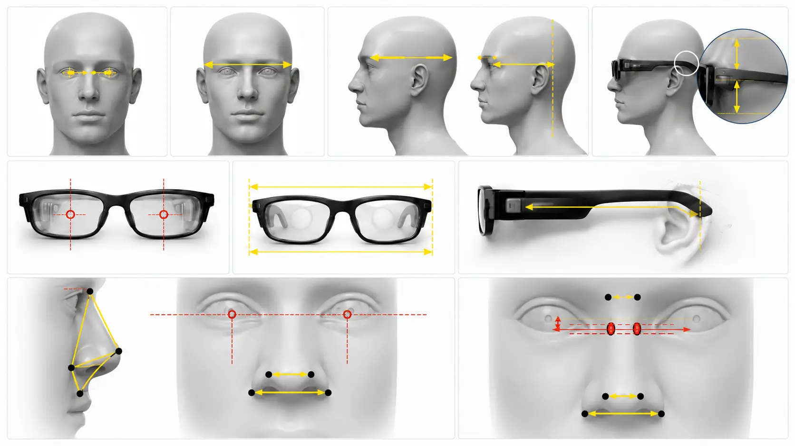

Smart Glasses Ergonomic Database
Building a quantitative validation method linking glasses design values to anthropometric measurement points — so "how many people does this design fit?" can be answered with data.
UX Strategy · Product Design

Design Context
The ID team had been using the median Western male head dimensions as the "standard head" for glasses design — a value that accounts for no ethnic variation and cannot answer "what percentage of target users will this design actually fit?"
To address this, I systematically gathered and organized anthropometric research data, built a cross-ethnic database, and developed a quantifiable coverage validation method for design values — alongside an AR UI visual comfort guideline to serve as a cross-disciplinary design reference.
What I Did
- Collected and organized an anthropometric database (ISO 15535, ANSUR II, NIOSH, Taiwan Ministry of Labor) covering 5 ethnic groups
- Defined the mapping between glasses industrial design values and human body measurement points; built the quantitative validation method
- Divided the validation scope into three zones: optical design values, frame design values (temple length / frame width), nose pad design values
- Applied to design validation for 3 lightweight smart glasses products
- Authored AR UI visual comfort guidelines covering object depth design, text visual angle conversion, and safe display zones
- 2 glasses design patents filed; 2 more in planning
Research
Core question: How many people does a given glasses design actually fit?
Defining measurement point mapping so design values have a calculable coverage rate
AR glasses have many industrial design values — frame width, temple length, nose pad dimensions, optical position, and more. Each design value needs to be mapped to a specific anthropometric measurement point before meaningful database comparisons can be made.
Frame width as an example: The effective wearing width of the glasses corresponds to the lateral distance across the flat area above the cheekbones on both sides of the head — which maps to the front end of the undercut curve in the glasses structure. Once the correspondence is established, the dimensional distribution from the database can be used to calculate what percentage of people the design value covers.
Database grouping: Divided into four sub-groups by East Asian / Western (predominantly Caucasian) × Male / Female. Each sub-group's 5th, 50th, and 95th percentile values are calculated. Comparing these against a glasses design value quantifies that design's coverage across different populations.
Data sources: ISO 15535, ANSUR II, NIOSH, Taiwan Ministry of Labor anthropometric database — covering five ethnic groups: White, Black, Hispanic, Asian, and Native American.
Three validation zones, each addressing a different source of wearing comfort
Each product's design validation is divided into three zones, each corresponding to different anthropometric dimensions:
- Optical design values: The spatial relationship between the optical module and the eye, affecting image clarity and visual comfort
- Frame design values: Temple length and frame width, affecting overall fit
- Nose pad design values: Nose bridge width, height, and angle, affecting weight distribution and long-wear comfort
Coverage results for each zone depend on the tolerance range of the design value and the target market ethnic group the product is primarily aimed at.
AR UI Visual Comfort Guidelines
Lightweight AR glasses UI design faces a fixed focal plane, small display, and long-wear visual fatigue — requiring a clear parameter spec to guide every design decision.
Use angular scaling instead of binocular disparity to avoid accommodation conflict
Most AR glasses have a fixed image focal plane at approximately 1.5–2 m. Adding binocular disparity to make UI elements appear closer creates a conflict between vergence and accommodation (VAC — Vergence-Accommodation Conflict), causing visual fatigue.
Guideline direction: Informational UI should avoid near-field binocular disparity. When depth perception is needed, prioritize 2D depth cues (size, opacity, occlusion). Interactive buttons and tooltips should stay on the same UI focal plane to avoid frequent depth layer switching.
Define text size by visual angle, not pt values
AR display distance differs from standard screens — applying pt values directly leads to text that is too small or inconsistent. The guideline defines four text levels by visual angle (°):
| Text Level | Target Angle | Height at 1.2 m (pt) | Usage |
|---|---|---|---|
| Minimum legible | 0.25° | ≈ 15 pt | Minimum legibility threshold — not recommended for primary reading |
| Body | 0.35° | ≈ 21 pt | Descriptive text, short prompts |
| Subheading | 0.45° | ≈ 27 pt | Option labels, section tags |
| Heading | 0.60° | ≈ 36 pt | Primary heading, status labels |
Keep primary content within ±10° of center gaze to minimize long-duration eye lifting
The optimal safe zone is ±10° from the vertical screen center, corresponding to the canvas (440 × 240 px) center with 120 px margin top/bottom and 100 px margin left/right — placing primary reading content within the most natural gaze range to reduce fatigue from sustained eye deviation.
- Image above, text below: last text line ≥ 100 px from the bottom edge
- Interactive options: ≥ 100–120 px from the top edge to prevent prolonged upward gaze triggering
- Single-screen text: no more than 30–40 characters; line spacing at 120–140% of character height
- Panel size limits: vertical ≤ 12°, horizontal ≤ 25°
Results
The ergonomic database and validation method applied to product design; the AR UI guideline serving as a cross-disciplinary design reference.
Products A, B, and C each validated across the three zones — optical, frame, and nose pad — covering 6 design values total. Each value was benchmarked against database percentiles to assess coverage in East Asian and Western populations, with targeted adjustment recommendations based on each product's intended market.
Combining the ergonomic database validation method with glasses structural design, 4 patents total have been advanced — 2 have entered the formal filing process.
Reflection
What I learned most from this project wasn't the data itself — it was the language of cross-disciplinary design.
Working with mechanical engineers, industrial designers, and optical engineers on design value tolerances — everyone's intuition and baseline for "is this dimension reasonable?" differed. Mechanical engineers cared about manufacturing tolerances; ID cared about visual proportions; optical engineers cared about optical path deviation. Learning to translate between these languages and find a shared evaluation framework was the most challenging and most rewarding part of the project.
Quantifying coverage also transformed how design discussions happened — shifting from "this seems like it could work" to "this design value covers XX% of Asian women — should we adjust?" That shift improved both the precision and efficiency of cross-team communication.
Key Takeaways
- Defining the mapping between anthropometric measurement points and glasses design values is the core of the entire method — get the mapping right, and all subsequent analysis becomes meaningful
- Quantified coverage shifts design discussions from gut judgments to data-backed decisions, making cross-disciplinary communication more efficient
- AR UI comfort design requires returning to physical principles: fixed focal plane, visual angle instead of pt values, natural eye movement range
- Emerging hardware products have no ready-made design standards — building the methodology itself is part of the design work